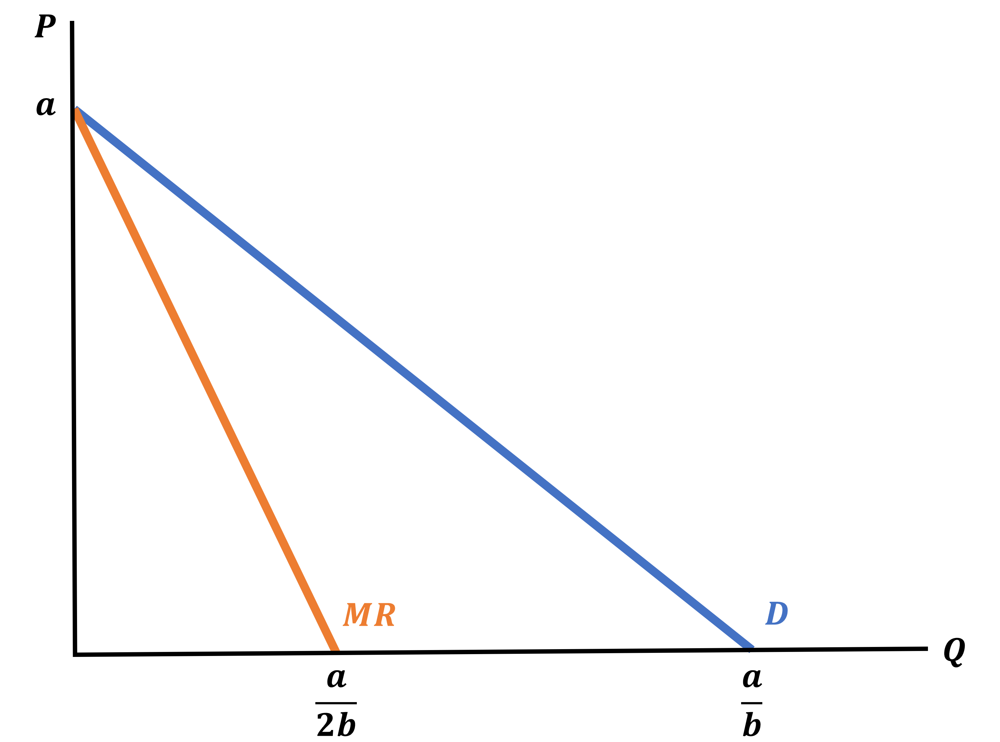
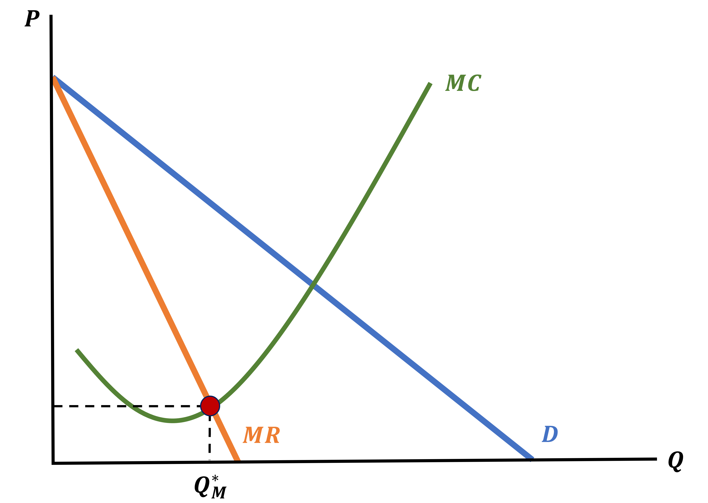
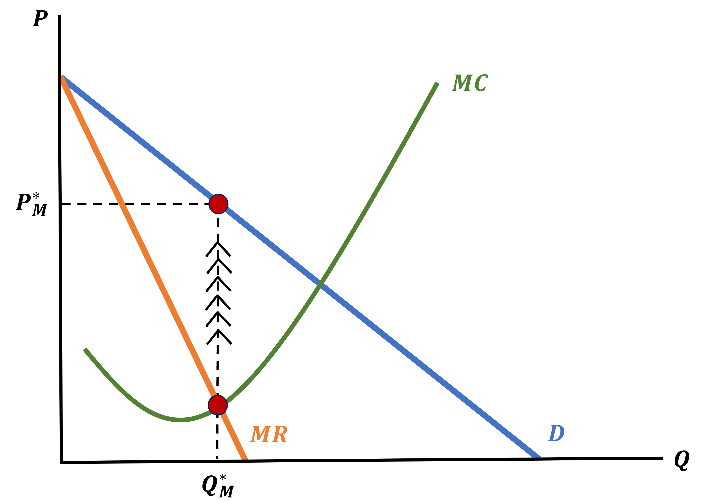
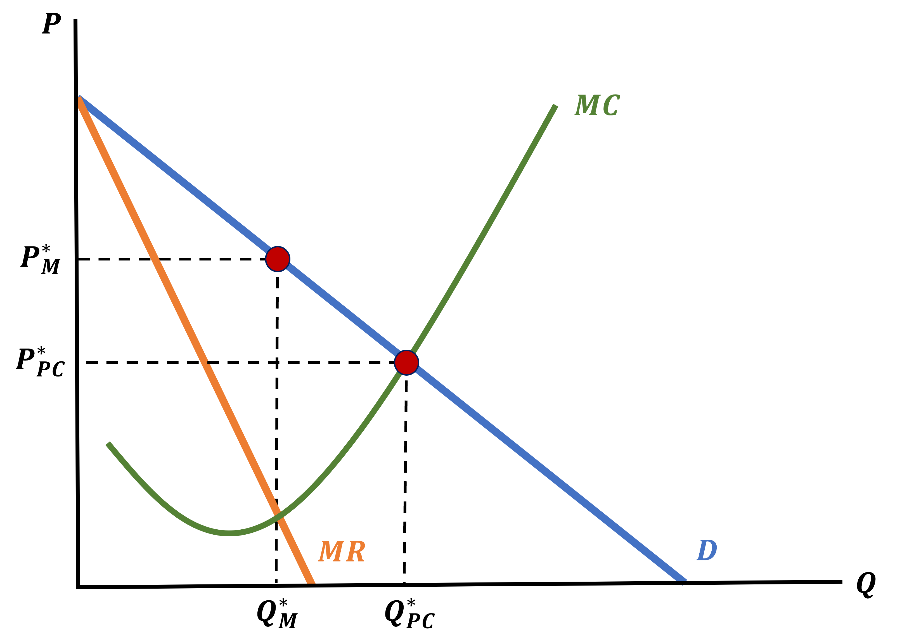

What is a Monopoly’s Marginal Revenue?
We find Marginal Revenue in the same way we have done before, we look at Revenue and take the derivative
Let’s look at a general case
. . .
Assume a linear Demand Curve: \(\;\;\; P = a - b \cdot Q_{D}\)
We first find Revenue
\[\begin{align*} R(Q) &= \color{red}{P} \cdot Q_{S} \\ R(Q) &= \color{red}{(a - b \cdot Q_{D})} \cdot Q_{S} \end{align*}\]
Remember \(\; Q_{S} = Q_{D} = Q\)
\[\begin{align*} R(Q) &= (a - b \cdot Q) \cdot Q \\ R(Q) &= aQ - bQ^{2} \end{align*}\]
Find the Derivative
\[\begin{align*} MR(Q) &= \frac{\partial R(Q)}{\partial Q} \\ \\ MR(Q) &= a - 2bQ \end{align*}\]
Monopoly Marginal Revenue
\[ \text{Demand: } P = a - b \cdot Q \;\;\;\; ; \;\;\;\; \text{Marginal Revenue: } P = a - 2bQ \]
A Monopolist’s Marginal Revenue Curve is just like the Demand Curve, except it is twice as steep

How Monopolists Make Their Choices
We know that Monopolists set MR = MC to maximize profits, but this only tells us the Quantity

How Monopolists Make Their Choices
To find the price \(P_{M}^{*}\) they demand at \(Q_{M}^{*}\), we have to take one additional step
We will use the Demand Curve
- The Monopolist chose their quantity while knowing that their choice determines market price through the Demand Curve
How Monopolists Determine Their Market Price
We follow the Monopoly Quantity up to the Demand Curve

Monopoly Market Equilibrium
To summarize:
- We use the Demand Curve to find the Marginal Revenue Curve
- The Monopolist produces the quantity determined by setting MR = MC
- The Monopolist Price is determined by the Demand Curve at \(Q_{M}^{*}\)
How Does This Compare to Perfect Competition?
We already showed that the Monopolists will produce less and demand a higher price
We can also show this on the same graph, which is useful to visualize what is happening
Recall that the Marginal Cost Curve is the same thing as the Supply Curve in Perfect Competition
The Perfect Competition Price & Quantity is where Demand equals Supply
Monopoly + Perfect Competition

Why Restrict Quantity?
Monopolists make an active choice to restrict quantity supplied, but why?
- It makes them higher profits
. . .
What about the nice tale of “all firms make zero economic profit in the Long-Run”?
Let’s address it
Monopoly Long-Run Profits
The question is
Why aren’t Monopolies simply eliminated by competition in the Long-Run?
. . .
There’s two exaplanations:
- Monopolists can only exist when there are Barriers to Entry that other firms cannot overcome
- These tend to be either physical (think infrastructure) or legal (regulatory)
- Even when there exist multiple firms in the market, they “collude” with one another and act as if they were a monopoly
- We call this a Cartel
. . .
Now let’s see how we find profits for a monopoly